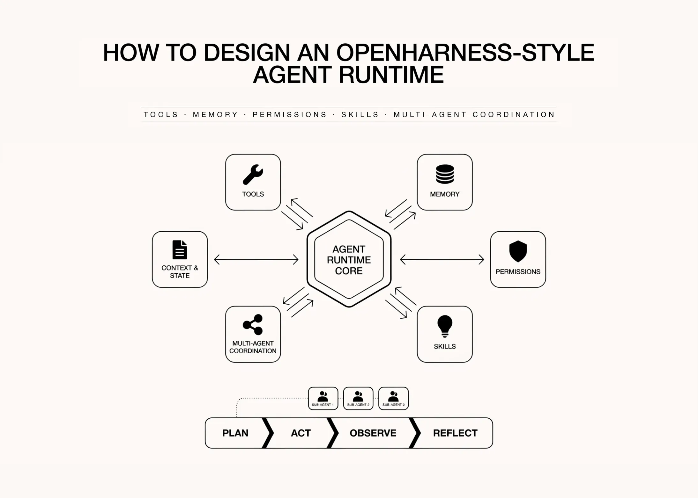

04 MarkTechPost 게시일 2026.06.24
오픈하네스식 에이전트 런타임 설계

에이전트 시스템을 실제로 굴리면, 모델 선택보다 도구 호출 검증과 상태 관리가 더 복잡해진다. 이 튜토리얼은 그런 복잡성을 감춘 채 프레임워크 API만 쓰지 않고, 내부 부품을 하나씩 다시 만든다. 특히 typed input, 스키마 생성, 권한 등급, 사용량·비용 계측 같은 운영성 요소를 코드의 기본 구조로 포함시킨 점이 눈에 띈다. 문서의 가치는 완성품보다는 '어떤 부품을 왜 두는가'를 드러낸 데 있다.
원문이 말하는 핵심
튜토리얼의 목표는 실전형 에이전트 하네스를 처음부터 재구성해 보는 것이다. 포함 범위가 넓다.
- 도구 사용과 typed tool schema
- 권한과 생명주기 훅
- 메모리와 스킬
- 컨텍스트 압축과 재시도 로직
- 비용 추적과 멀티 에이전트 조정
또한 API 키나 복잡한 인프라 없이도 실험 가능하도록, 실행 가능한 예제 형태를 유지한다.
어떤 설계 선택을 보여주나
도구 입력은 파이썬 데이터클래스(dataclass)에서 JSON 스키마로 자동 변환한다. 필드 설명, 타입, optional 여부, 기본값 유무를 읽어 required 필드를 계산하는 방식이다.
이 접근의 장점은 두 가지다. 첫째, 모델에 넘길 도구 정의와 실제 실행 시 타입 검증이 같은 원천에서 나온다. 둘째, 잘못된 인자 형식을 초기에 걸러낼 수 있다.
`instantiate()` 단계에서는 문자열을 bool, int, float, list 등으로 강제 변환(coerce)하며, 필수값이 없으면 즉시 에러를 낸다. 즉 '모델이 대충 맞춰 주겠지'에 기대지 않는 구조다.
권한과 안전장치는 어떻게 나뉘나
도구는 위험도에 따라 권한 종류를 구분한다.
- READ
- WRITE
- EXECUTE
- META
이 구분은 기본 허용 정책을 세우는 기준이 된다. 문서 발췌에는 정책 엔진 전체가 다 보이지 않지만, 최소한 도구 실행을 기능별로 같은 수준에서 취급하지 않는다는 설계 의도는 분명하다.
또한 튜토리얼은 인메모리 가상 파일시스템(VirtualFS)을 둬, 실습 환경을 안전하고 결정론적(deterministic)으로 유지하려고 한다. 실제 운영에서는 로컬 파일시스템이나 외부 서비스 대신 이 자리에 샌드박스가 들어가야 함을 시사한다.
비용과 상태를 먼저 시민으로 둔다
사용량 추정은 부가 기능이 아니라 기본 자료구조로 포함된다. `Usage`와 `CostMeter`를 두고, 입력·출력 토큰과 호출 수를 누적해 모델별 가격표로 달러 비용을 환산한다.
토큰 수는 공급자 중립적인 간이 추정치로 계산한다.
- 대략 4자당 1토큰
- 모델별 가격표는 `PRICE_BOOK`으로 관리
이는 정확한 청구 기준은 아니지만, 설계 단계에서 어떤 루프가 비용을 폭증시키는지 빠르게 감지하는 데 유용하다. 사내 PoC에서도 같은 발상으로 호출 수, 평균 툴 라운드, 컨텍스트 길이를 함께 기록하는 편이 좋다.
프레임워크와 다른 지점은 어디인가
이 글의 포인트는 새로운 프레임워크를 권하는 것이 아니라, 프레임워크가 감춘 제어 흐름을 드러내는 데 있다. 모델이 한 턴을 생성하고, 도구 호출이 있으면 스키마 검증을 거쳐 실행한 뒤, 결과를 다시 메시지로 넣어 다음 턴으로 이어지는 전형적인 루프를 분해해서 보여준다.
이 관점은 실무에서 중요하다. 프레임워크를 바꿔도 결국 유지해야 하는 것은
- 도구 레지스트리
- 인자 검증
- 권한 판정
- 상태 저장
- 실패 처리
같은 운영 부품이기 때문이다.
실무 영향과 도입 포인트
사내에서 에이전트 런타임을 설계하거나 평가할 때, 이 튜토리얼은 체크리스트로 쓰기 좋다. 특히 다음 항목이 빠진 프레임워크는 나중에 별도 공사로 돌아오기 쉽다.
- 도구 입력 타입 검증
- 권한 등급과 승인 흐름
- 컨텍스트 압축 전략
- 비용 계측
- 멀티 에이전트 협업 시 상태 소유권
반대로, 이 글은 어디까지나 학습용 재구성이다. 분산 실행, 장애 복구, 장기 저장, 인증·감사 로그 같은 운영 수준 요구사항은 발췌 범위에서 충분히 다뤄지지 않는다.
출처와 한계
본문 발췌가 코드 초반부 중심이라 메모리, 스킬, 멀티 에이전트 조정의 완성된 흐름까지는 모두 보이지 않는다. 따라서 완제품 런타임의 비교 자료로 쓰기보다, 에이전트 하네스의 최소 구성요소를 이해하는 설계 문서로 읽는 편이 맞다.
출처: MarkTechPost의 OpenHarness 스타일 에이전트 런타임 튜토리얼
주요 용어
원문 정보
제목: How to Design an OpenHarness Style Agent Runtime with Tools, Memory, Permissions, Skills, and Multi-Agent Coordination
게시일: 2026.06.24
출처 URL: https://www.marktechpost.com/2026/06/24/how-to-design-an-openharness-style-agent-runtime-with-tools-memory-permissions-skills-and-multi-agent-coordination/